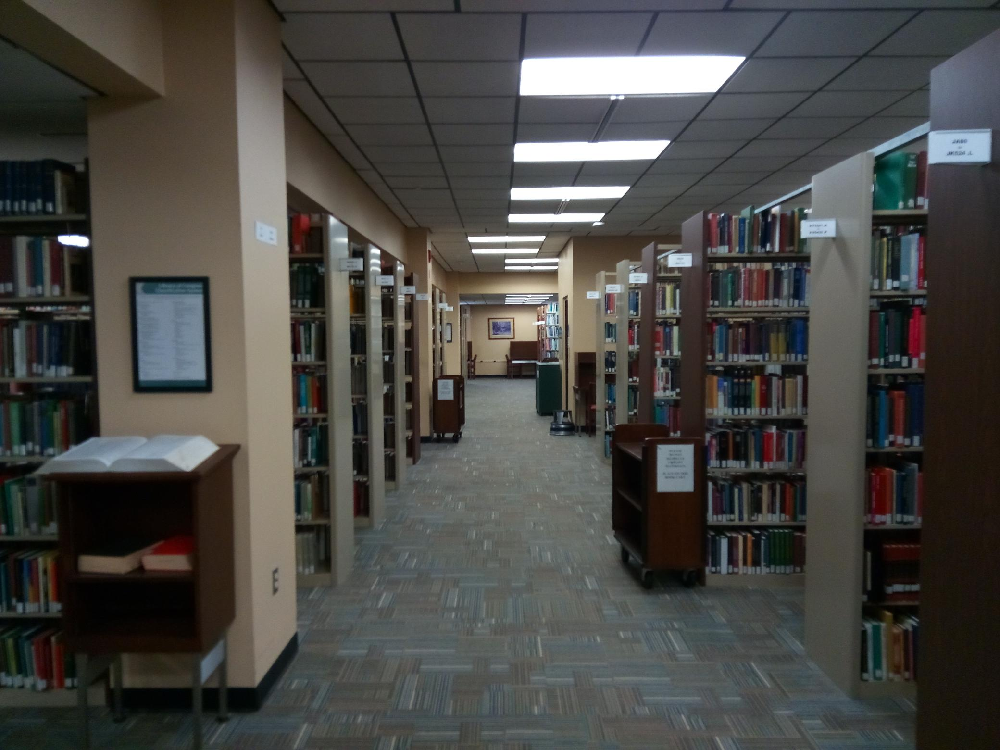
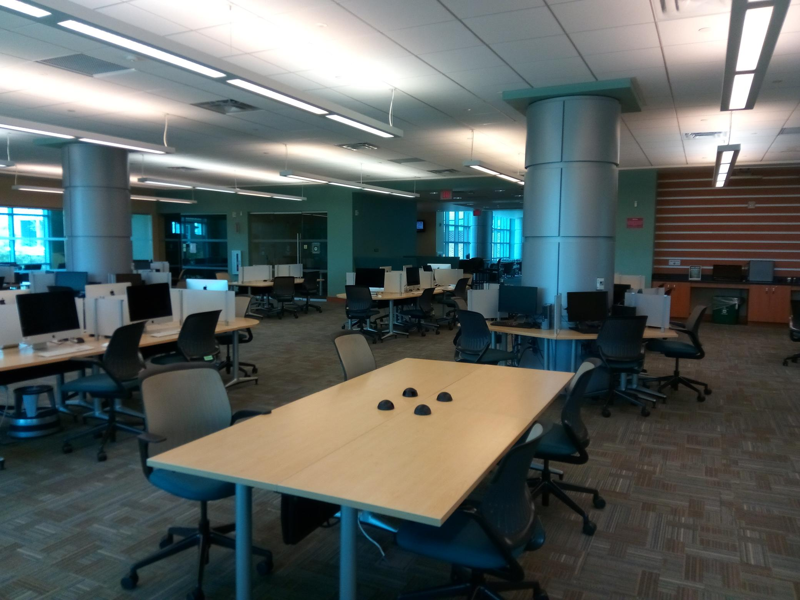

Staff Directory
Need to contact your supervisor? Can't remember your supervisor's name, phone number or email? Scroll down and you will find a directory of all Access Services Supervisors along with their photograph and contact information.
Access Services Administration
| Photo |
Name |
Position |
Telephone |
Email |
|
Michelle Lewis |
Coordinator of Access Services |
843-349-2459 |
mlewis@coastal.edu |
|
Hailey Schaub |
Student Assistant Supervisor |
843-349-2400 |
hschaub@coastal.edu |
Access Services Supervisors
| Photo |
Name |
Position |
Telephone |
Email |
|
William Carter |
Access Services Supervisor, 1st Shift (7:00AM - 3:30PM) |
843-349-2214 |
wcarter1@coastal.edu |
|
Sharon Payne |
Access Services Supervisor, 2nd Shift (3:00PM - 11:30PM) |
843-349-2214 |
spayne1@coastal.edu |
|
Joseph Taylor |
Access Services Supervisor, 3rd Shift (11:00PM - 7:30AM) |
843-349-2214 |
jtaylor3@coastal.edu |